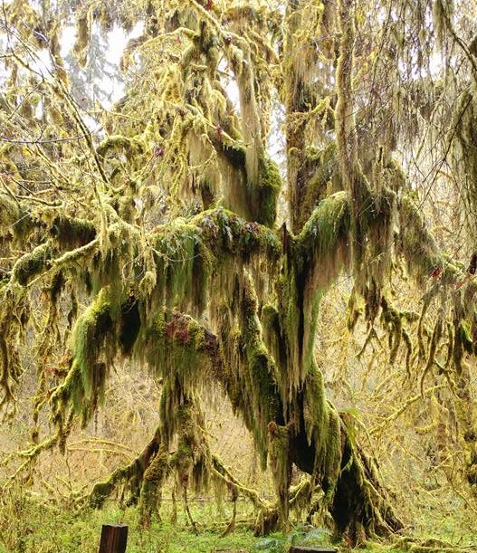

Trees Are Cool
To many, the word tree evokes images of such ancient, powerful, and majestic structures as oaks and sequoias, the latter being among the most massive and longest-living organisms in the world. Although the majority of Earth’s terrestrial biomass is represented by trees, the fundamental importance of these seemingly ubiquitous plants for the very existence and diversity of life on Earth is perhaps not fully appreciated. The biosphere is dependent on the metabolism, death, and recycling of plants, especially trees. Their vast trunks and root systems store carbon dioxide, move water, and produce oxygen that is released into the atmosphere. The organic matter of the soil develops primarily from decayed leaves, twigs, branches, roots, and fallen trees, all of which recycle nitrogen, carbon, oxygen, and other important nutrients. There are few organisms as important as trees for maintaining Earth’s ecology.

Another tree
Wonderland
This tree was in the Hoh Rainforest in Washington state. The area is known as Hall Of Mosses. Along the main trail there is a particularly otherworldy 200 ft side path which leads to an enchanting grove of giant maple trees, cloaked in hanging moss. One visitor to the trail wrote that “the trees stand like green-robed figures of eld.”
Due to the abundance of water and nutrients in the soil of the rainforest, many of the large trees have stunted roots and fall easily during particularly windy storms. This leads The Hall of Mosses to also serve as a graveyard for fallen mossy trees. However, many trees and mosses continue to grow from and over the fallen tree trunks.
The Rain Forest receives up to 14 ft of rain a year, resulting in the lush green canopy that covers most of the forest. The National Park Services websites states, “The Hoh Rain Forest is located in the stretch of the Pacific Northwest rainforest which once spanned the Pacific coast from southeastern Alaska to the central coast of California. The Hoh is one of the finest remaining examples of temperate rainforest in the United States.”
What's Happening?
Just so it's known, there's some sentences in this project that are mine, but almost all of it is plagarized. However, these two first pictures("Talk about tall" and "Another tree") are from the trip described in the "feature" portion of this page. And, of course, the words in the feature section are my words. If I had the time, I would create all of this site's content. I would have a lot of fun doing that, but alas time is short. Here's some more stolen words:
A revolution has been taking place in the scientific understanding of trees, and Wohlleben is the first writer to convey its amazements to a general audience. The latest scientific studies, conducted at well-respected universities in Germany and around the world, confirm what he has long suspected from close observation in this forest: Trees are far more alert, social, sophisticated—and even intelligent—than we thought.